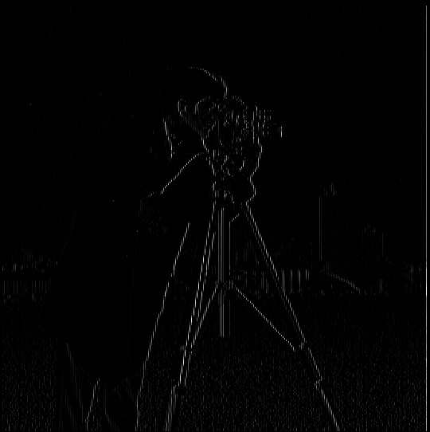
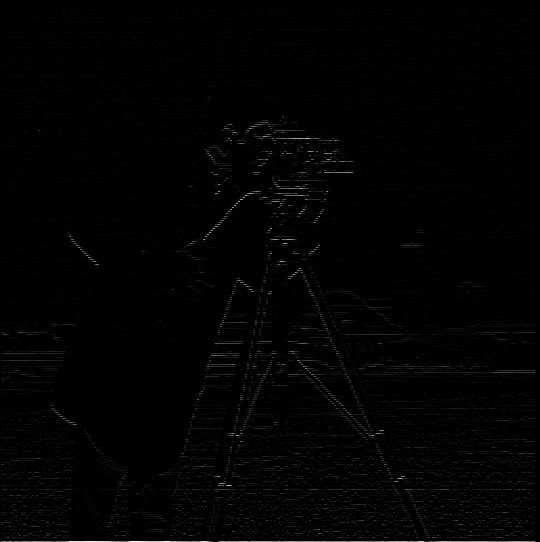

Original Cameraman

Cameraman with X Finite Difference Filter

Cameraman with Y Finite Difference Filter

Gradient Magnitude of Cameraman

We will be investigating frequencies and filters in this project, looking at how they will help us with sharpening images, blending images, and making hybrid images. We start with looking at filters, and then move to frequencies in the second part.
Here, we will be using the finite difference operators Dx = [1, -1] and Dy = [1, -1]^T to ultimately end up with a binarized image. We first convolve the image with each difference operator separately, giving us the partial derivative in the x and y directions. Next, we find the gradient magnitude of the image, which is computed by taking the euclidean norm of each of the two partial derivatives. The two partial derivatives are part of the gradient, which is calculated by taking the derivative of the image along both the x and y directions (this is what the convolutions with the finite difference operators are). The gradient magnitude is the overall rate of change of intensity at that point. Lastly, we find the binarized image using the threshold of about 0.35.
We now move on to the DoG Filter, which can help produce a less noisy end binarized result. We will investigate how the order of filters affects this end result. We first convolve the image with a gaussian filter, and then use the finite difference operators to get the binarized image like we did in the previous part. This seems to give a much more defined and less noisy final image than what we did in the previous part. The binarized threshold was 0.35.


This time we first convolve each of the finite difference operators with the gaussian filter, and then follow the procedure from part one to get the final binarized image. The result is pretty much the same as the previous setup of the filters. The binarized threshold was 0.35.


We want to enhance the images below in this part, which we can do subtracting the blurred image (created using a gaussian filter) from the original image, getting the high-frequency features that we add back to the original image using an alpha weighting, which helps "sharpen" the image.


The final sharpened image seems to be even clearer than the original image, but there same to be a couple of hard features that don't seem to have been recovered in the sharpened image after the initial blurring lost them.


This is probably my favorite section in the project, as hybrid images are images that when viewed at different distances seem to be different images to the viewer. There are two parts to this: the high-frequency and the low-frequency components. The high-frequency image is found by subtracting a smoothed (in this case by a gaussian) version of the original image from the original image itself. This contains the high-frequency components, including edges and textures. The low-frequency image is calculated by simply applying a gaussian filter to the image, which gives the broad features of the image. Bells & Whistles: I created these hybrid images while already utilizing color.


The two images are not similar in shape or position in their original images, leading to a not so great hybrid image of the two mascots, with the 49ers mascot being washed out.


Before we get into multi-resolution blending, we start with gaussian and laplacian Stacks. A gaussian stack is a representation of the image, just in multiple levels, where each level is calculated by applying a gaussian filter to the previous level. As we keep going to the next level, we get smoother features, which helps us with laplacian stacks and blending. For laplacian stacks, we find these by subtracting two levels of the gaussian stack to get the high-frequency components at each level, which helps with blending later on.


This is the final part of the project, where we merge images while preserving their features and textures. We blend at each level of the laplacian stack to allow for a smooth transition in the blending process. We use a mask to determine which portions of each image should be blended together (the oraple is a vertical seam while the hamilton and avengers is a circular mask). The mask is also made into a gaussian stack to create a nice, well transitioned seam. Bells and Whistles: I did this part with color from the start.


I learned quite a few things in this project, and really enjoyed playing with a variety of blending and hybrid images. One of the most important things I learned was dealing with normalization and conversions of data types, whether it be on intermediate levels in the stack or with finalized images, as the conversions seemed to mess with my images when I switched between cv2 and plt and sk while also converting and normalizing.